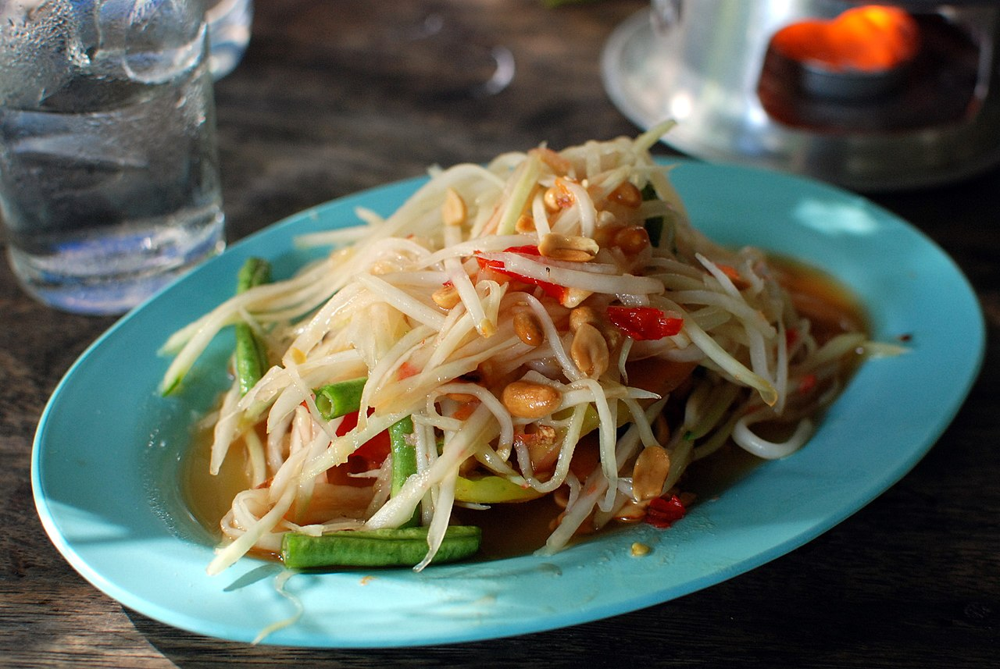

Description
The taste of papaya salad dish by Ms Tea is sweet and sour at the same time.
You cannot stop eating! And as an extra, this salad is also healthy to your body.
Ingredients
- ¼ cup peanuts
- 2 Thai chiles, chopped
- 3 cloves garlic
- 1 tablespoon dried shrimp
- 1 tablespoon white sugar
- 2 medium limes, juiced
- 2 tablespoons fish sauce
- 1 medium papaya - peeled, seeded, and sliced
- 1 cup cherry tomatoes, halved
- ¼ cup fresh green beans, cut into 1-inch pieces
- ½ medium carrot, peeled and shredded
- salt and ground black pepper to taste
Steps
- Preheat the oven to 350 degrees F (175 degrees C). Place peanuts on a baking sheet.
- Toast in the preheated oven until fragrant and browned, 7 to 8 minutes. Let cool for 5 minutes.
- Grind roasted peanuts, Thai chilies, garlic, dried shrimp, and sugar in a mortar and pestle or food processor. Stir in lime juice and fish sauce to make dressing.
- Toss papaya, tomatoes, green beans, and carrot with dressing. Season with salt and pepper.
Reference
- https://www.allrecipes.com/recipe/283411/green-papaya-salad-som-tam-malakor/